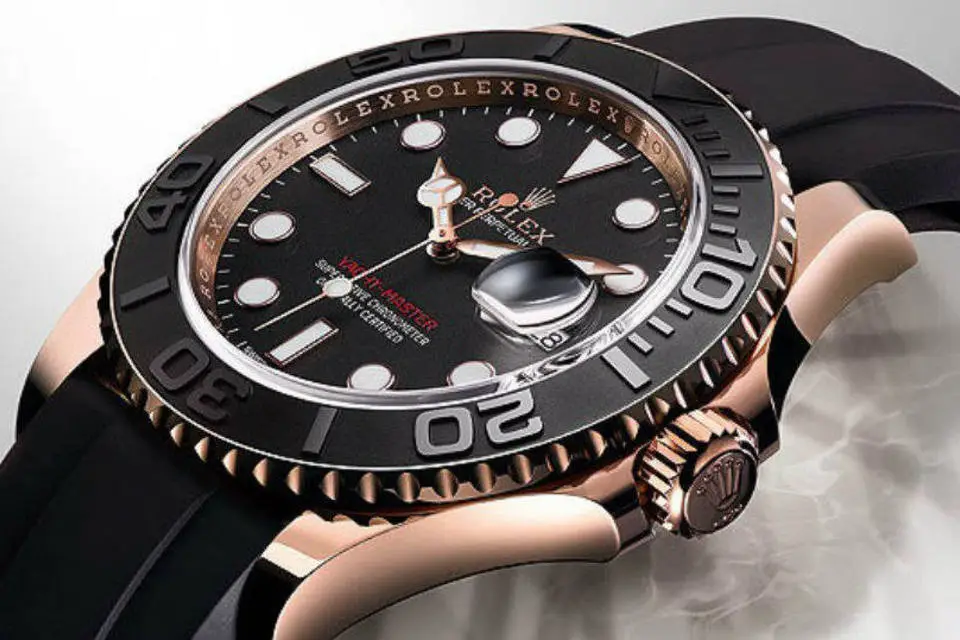
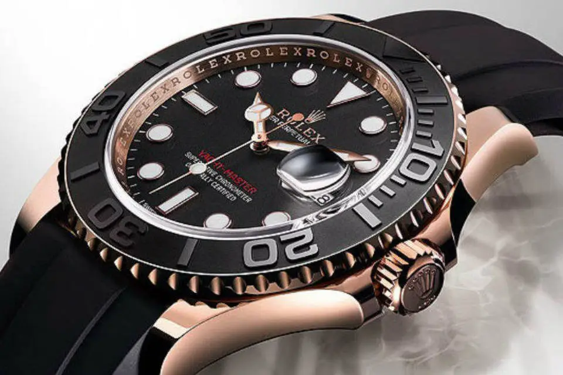

A Suíça é um país com diversidade cultural graças à sua localização geográfica entre países como Alemanha, França, Itália, Áustria e Liechtenstein. Essa diversidade contribuiu para formar uma cultura única!
A Suíça tem uma extensa tradição em música, artesanato e mais de 1.000 museus.
Se você visitar o país, verá ''CH'' em muitos casos. Mas o que ela representa? ''CH'' refere-se a tribos que habitaram o país há 2.000 anos. Uma dessas grandes tribos eram os helvécios, uma tribo celta e ''CH'' significa ''Confoederatio Helvetica'', o nome formal da Confederação Suíça.
A cultura suíça também é conhecida por seu artesanato e, principalmente, pela relojoaria. A indústria de relógios de luxo na Suíça possui uma excelente reputação de artesanato com marcas de relógios como Patek Phillippe, Rolex, Tissot, TAG Heuer, Vacheron Constantin e Chopard.
 

Desenvolvido por Eduardo Daniel